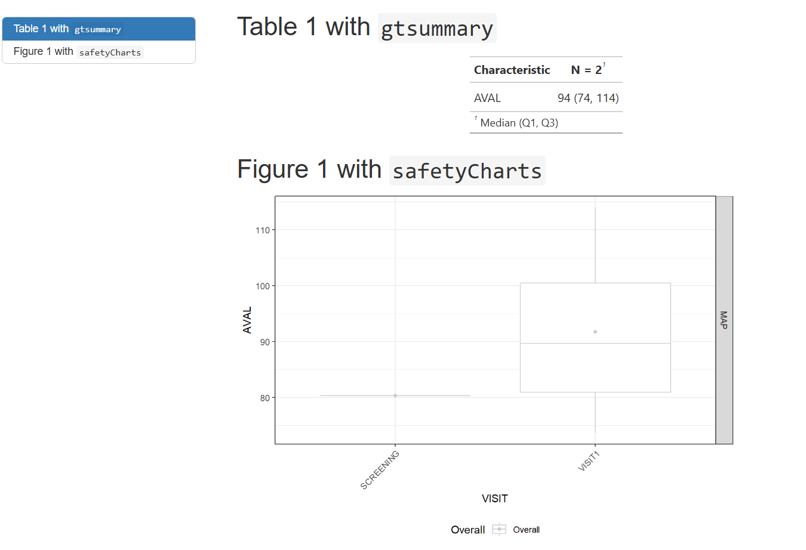
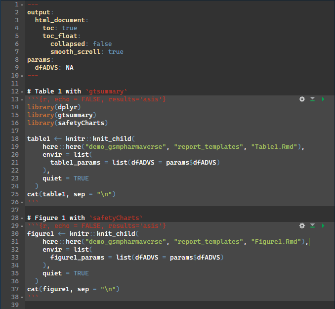
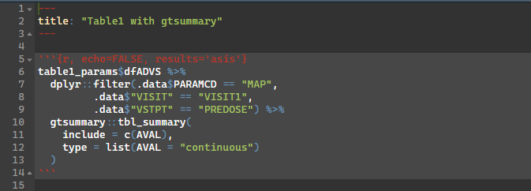

{workr}: a very simple R data pipeline
2025-03-20
A very simple R data pipeline
(almost too simple?)
meta and stepsworkr::RunWorkflow()lData)step$name) that updates lDatameta and lData as inputslData$speed <- dplyr::pull(df=cars, col="speed")
lData$result <- mean(lData$speed)
Basically mean(cars$speed)
RunWorkflow() returns: 15.4
Return full workflow object with: RunWorkflow(bReturnResult = FALSE)
mean(cars$dist))mean(iris$Sepal.Length))workr::RunWorkflows()lData for the next workflowsubset workflow filters clindata::adam_labs to cholesterol rows and returns as result as lData$dfmean workflow calculates mean of value column from filtered dataclindata::adam_labsWhat you would run in R
wf <- yaml::read_yaml(system.file("demo_gsmpharmaverse/workflows/1_RAW_TO_SDTM/VS.yaml"))
lData <- list(
dm_raw = read.csv(system.file("raw_data/dm.csv", package = "sdtm.oak")),
vs_raw = read.csv(system.file("raw_data/vitals_raw_data.csv", package = "sdtm.oak")),
study_ct = read.csv(system.file("raw_data/sdtm_ct.csv", package = "sdtm.oak"))
)
RunWorkflow(
lWorkflow = wf,
lData = lData
)Whats happening inside
meta:
ID: VS
Type: SDTM
Description: Transform Raw VS to SDTM VS following sdtm.oak article
Priority: 1
spec:
# Read in data
vs_raw:
_all:
required: true
study_ct:
_all:
required: true
steps:
# Create oak_id_vars
- output: vs_raw2
name: sdtm.oak::generate_oak_id_vars
params:
raw_dat: vs_raw
pat_var: "PATNUM"
raw_src: "vitals"=
It is important to define how interim objects are handled within lData. As in pipe-based workflows (%>% and |>), teams can either preserve each step by assigning a new output name or overwrite the existing object; in this example, that means choosing vs_raw2 for traceability or overwriting vs_raw.
Using workflows
# Map topic variable SYSBP and its qualifiers.
- output: vs_sysbp
name: sdtm.oak::hardcode_ct
params:
raw_dat: vs_raw
raw_var: "SYS_BP"
tgt_var: "VSTESTCD"
tgt_val: "SYSBP"
ct_spec: study_ct
ct_clst: "C66741"
- output: vs_sysbp
name: workr::RunQuery
params:
df: vs_sysbp
strQuery: "SELECT * FROM df WHERE VSTESTCD IS NOT NULL"
# Map topic variable SYSBP and its qualifiers.
- output: vs_sysbp
name: sdtm.oak::hardcode_ct
params:
tgt_dat: vs_sysbp
raw_dat: vs_raw
raw_var: "SYS_BP"
tgt_var: "VSTEST"
tgt_val: "Systolic Blood Pressure"
ct_spec: study_ct
ct_clst: "C67153"
- output: vs_sysbp
name: sdtm.oak::assign_no_ct
params:
tgt_dat: vs_sysbp
raw_dat: vs_raw
raw_var: "SYS_BP"
tgt_var: "VSORRES"Using pipes
# Map topic variable SYSBP and its qualifiers.
vs_sysbp <-
hardcode_ct(
raw_dat = vs_raw,
raw_var = "SYS_BP",
tgt_var = "VSTESTCD",
tgt_val = "SYSBP",
ct_spec = study_ct,
ct_clst = "C66741"
) %>%
dplyr::filter(!is.na(.data$VSTESTCD)) %>%
hardcode_ct(
raw_dat = vs_raw,
raw_var = "SYS_BP",
tgt_var = "VSTEST",
tgt_val = "Systolic Blood Pressure",
ct_spec = study_ct,
ct_clst = "C67153",
id_vars = oak_id_vars()
) %>%
assign_no_ct(
raw_dat = vs_raw,
raw_var = "SYS_BP",
tgt_var = "VSORRES",
id_vars = oak_id_vars()
)Each pipe statement is equivalent to a step in the workflow; integration of any package would mostly be depend on familiarity with a particular R Package, not necessarily this workr framework.
What you would run in R
wf <- yaml::read_yaml(system.file("demo_gsmpharmaverse/workflows/2_SDTM_TO_ADAM/ADVS.yaml"))
sdtm <- list(
SDTM_DM = arrow::read_parquet(system.file("demo_gsmpharmaverse/data/SDTM/SDTM_DM.parquet", package = "workr")),
SDTM_VS = arrow::read_parquet(system.file("demo_gsmpharmaverse/data/SDTM/SDTM_VS.parquet", package = "workr"))
)
RunWorkflow(lWorkflow = wf, lData = sdtm)Whats happening inside
meta:
ID: ADVS
Type: ADAM
Description: Create Basic ADVS
Priority: 1
spec:
SDTM_DM:
_all:
required: true
SDTM_VS:
_all:
required: true
steps:
- output: advs
name: admiral::derive_vars_merged
params:
dataset: SDTM_VS
dataset_add: SDTM_DM
new_vars: !expr exprs(TRT01A)
by_vars: !expr exprs(STUDYID, USUBJID)
- output: advs
name: dplyr::mutate
params:
.data: advs
PARAMCD: !expr rlang::expr(.data[["VSTESTCD"]])
AVAL: !expr rlang::expr(.data[["VSORRES"]])
- output: advs
name: admiral::derive_param_map
params:
dataset: advs
by_vars: !expr exprs(STUDYID, USUBJID, TRT01A, VSDTC, VISIT, VISITNUM, VSTPT, VSTPTNUM)
sysbp_code: 'SYSBP'
diabp_code: 'DIABP'
get_unit_expr: !expr rlang::expr(.data[["VSORRESU"]])=
advs <- admiral::derive_vars_merged(
dataset = SDTM_VS,
dataset_add = SDTM_DM,
new_vars = exprs(TRT01A),
by_vars = exprs(STUDYID, USUBJID)
) %>%
mutate(
PARAMCD = VSTESTCD,
AVAL = VSORRES
) %>%
derive_param_map(
by_vars = exprs(STUDYID, USUBJID, TRT01A, VSDTC, VISIT, VISITNUM, VSTPT, VSTPTNUM),
sysbp_code = 'SYSBP',
diabp_code = 'DIABP',
get_unit_expr = VSORRESU
)derive_param_map() derives mean arterial pressure (MAP) from SYSBP and DIABP.expr(), exprs(), and !!.gtsummary and safetyChartsWhat you would run in R
wf <- yaml::read_yaml(system.file("demo_gsmpharmaverse/workflows/3_ADAM_TO_TFL/WorkProduct1.yaml", package = "workr"), warn = FALSE)
adam <- list(
ADVS = arrow::read_parquet(system.file("demo_gsmpharmaverse/data/ADAM/ADAM_ADVS.parquet", package = "workr"))
)
workr::RunWorkflows(lWorkflows = wf, lData = adam )Whats happening inside
meta:
ID: WorkProduct1
Type: TFL
Description: Create Basic Work Product/Report which can modularize the tables included
Priority: 1
spec:
ADVS:
_all:
required: true
steps:
- output: lParams
name: list
params:
'dfADVS': ADVS
- output: table1
name: rmarkdown::render
params:
input: !expr here::here("demo_gsmpharmaverse", "report_templates", "WorkProduct1.Rmd")
output_file: !expr here::here("demo_gsmpharmaverse", "TFLS", "WorkProduct1.html")
envir: !expr new.env(parent = globalenv())
params: lParams=
lParams <- list(dfADVS = arrow::read_parquet(system.file("demo_gsmpharmaverse/data/ADAM/ADAM_ADVS.parquet", package = "workr")))
table1 <- rmarkdown::render(
input = here::here("demo_gsmpharmaverse", "report_templates", "WorkProduct1.Rmd"),
output_file = here::here("demo_gsmpharmaverse", "TFLS", "WorkProduct1.html"),
envir = new.env(parent = globalenv()),
params = lParams
)
Parent Rmd

Child Rmd

{cards} is an R package for creating CDISC Analysis Results Data (ARD)
It is designed to support automation, reproducibility, reusability, and traceability of analysis results
What you would run in R
Whats happening inside
meta:
ID: table_mean_arterial_pressure
Type: ars
Description: Create table 1 ARS
Priority: 1
spec:
ADVS:
_all:
required: true
steps:
- output: predose_visit1_map
name: workr::RunQuery
params:
df: ADVS
strQuery: "SELECT * FROM df WHERE PARAMCD = 'MAP' AND VISIT = 'VISIT1' AND VSTPT = 'PREDOSE'"
- output: table_predose_visit1_map
name: cards::ard_summary
params:
data: predose_visit1_map
variables:
- AVAL=
The primary outputs (thus far) of these workflows is typically a derived dataset, but persistence (load/save) is intentionally decoupled
Workflows orchestrate transformation logic; storage strategy is flexible and left to the user/organization
Saving outputs (e.g., .csv, .parquet, .json, or a data lake) can be implemented as an additional workflow step/configuration
RunStep()
params as follows: lMeta → lData → lSpec → names(lMeta) → names(lData) → as.character({param})MakeWorkflow()RunWorkflows()RunQuery()